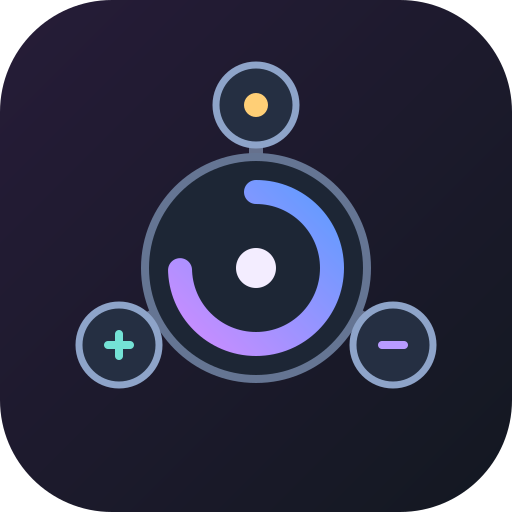
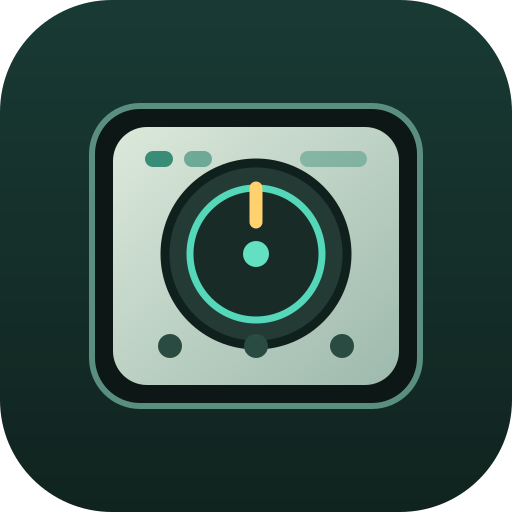
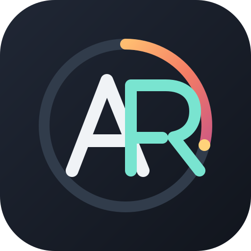

01 · Orbit Pulse
An active point travels around a control ring.
Five distinct app and service identity directions, shown at the same size.
An active point travels around a control ring.
A precise rotary dial with a clear position marker.

Three controls connect to one central action.

A miniature control surface centered on its main dial.

An A/R mark built into a continuous ring.